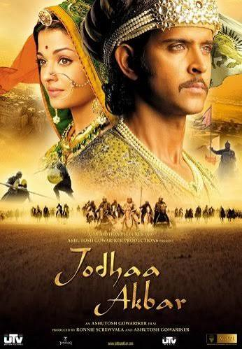

genre :Historical | War | Drama
Rating :⭐7.5
Duration :213 Minutes
director :Ashutosh Gowariker
Writers :Haider Ali | Ashutosh Gowariker | K.P. Saxena
Hritik Roshan | Aishwarya Rai bachchan | Sonu Sood
Plot Focus :A sixteenth century love story about a marriage of alliance that gave birth to true love between a great Mughal emperor, Akbar, and a Rajput princess, Jodha.
genre :Historical | War | Drama
Rating :⭐7.5
Duration :213 Minutes
director :Ashutosh Gowariker
Writers :Haider Ali | Ashutosh Gowariker | K.P. Saxena
Star Cast :Hritik Roshan | Aishwarya Rai bachchan | Sonu Sood
Plot Focus :A sixteenth century love story about a marriage of alliance that gave birth to true love between a great Mughal emperor, Akbar, and a Rajput princess, Jodha.